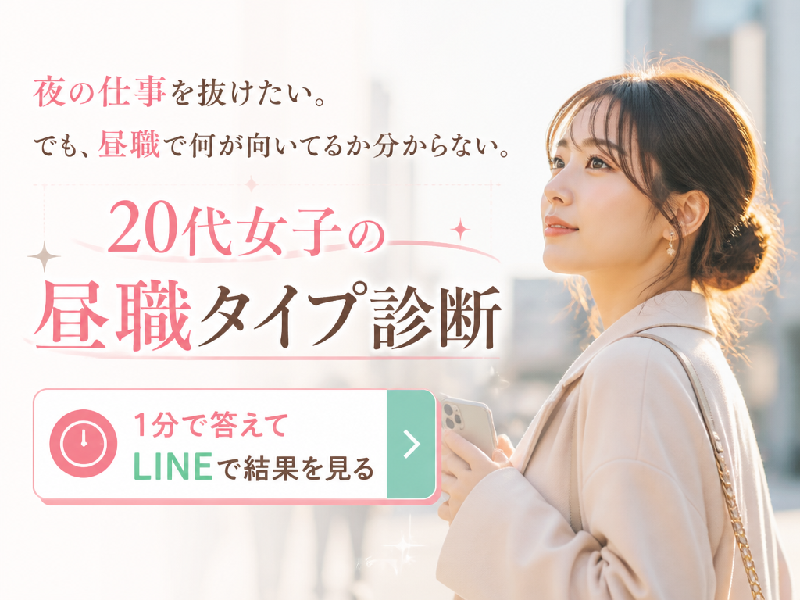
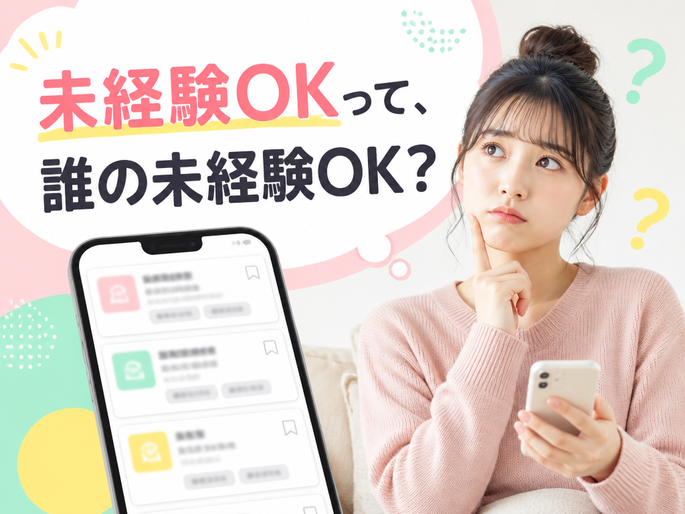
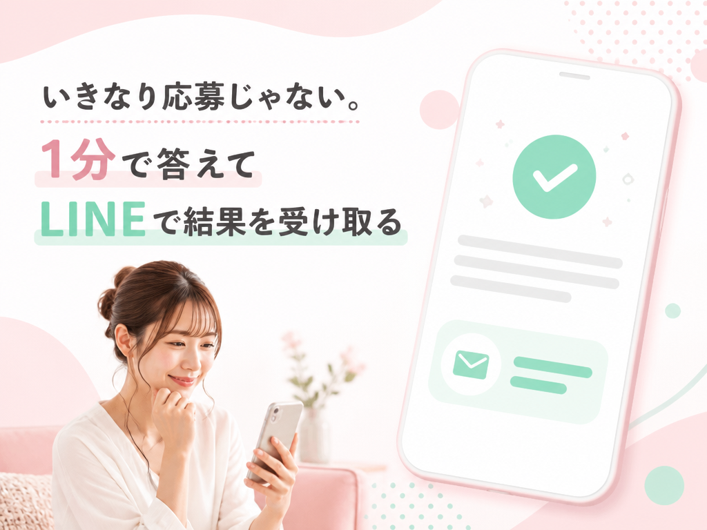
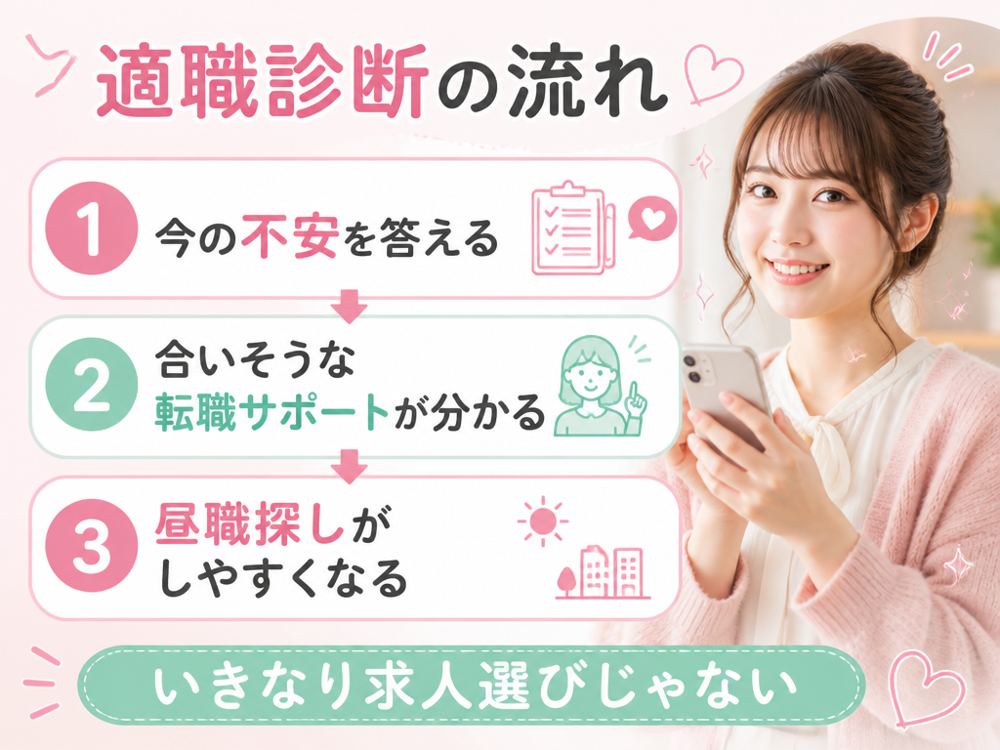
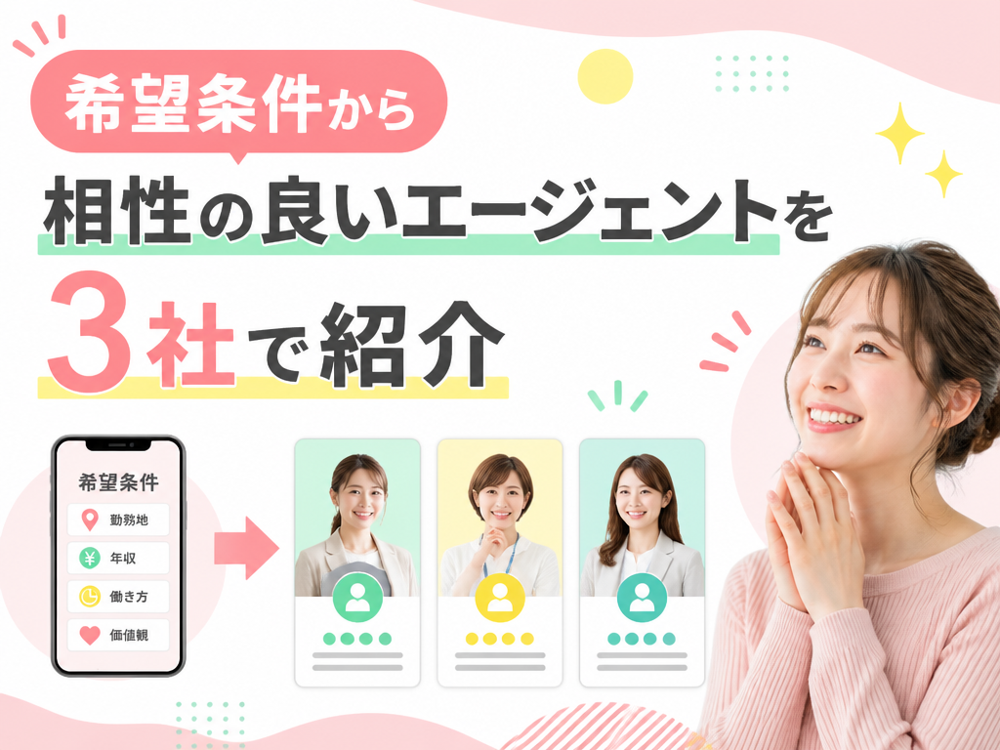
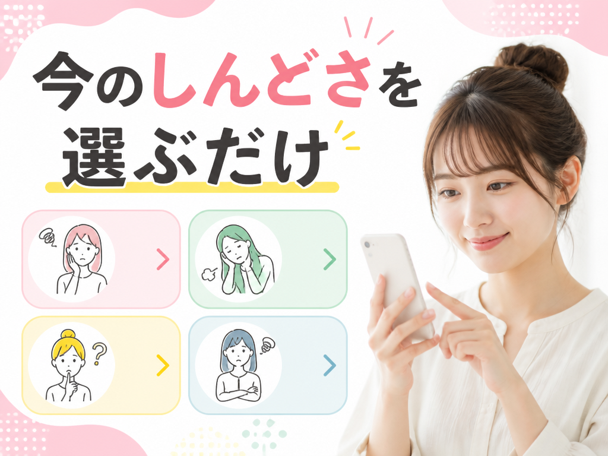
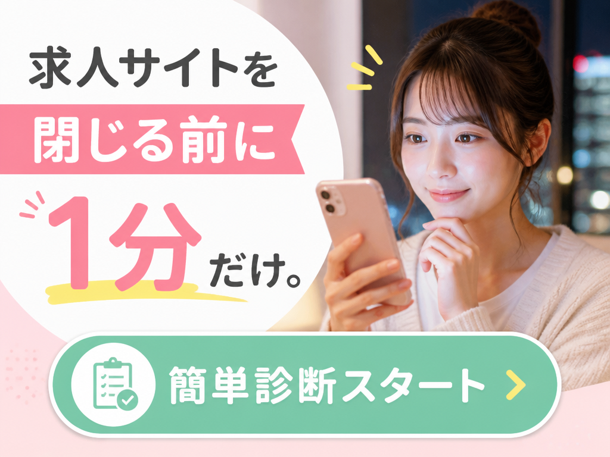

夜の生活を、ずっと続けるつもりじゃなかった。
お金に困っているわけじゃない。でも、昼職って何を選べばいいのか分からないですよね。
求人を見る前に、まずは「私に合う昼職タイプ」を知ってみませんか？
事務、受付、販売、営業。聞いたことはあっても、「私に向いてるのはどれ？」ってなりますよね。
夜の働き方に慣れているほど、昼の会社の雰囲気って想像しにくいものです。だから、最初から履歴書を作ろうとしなくて大丈夫。まずは「合いそうな昼職」を知るところからでいいんです。
求人を見るほど、「結局どれ？」ってなりませんか？
「未経験OK」「若手活躍中」「アットホーム」
言葉はやさしいけど、それが自分向けなのかは別ですよね。給料は下がりすぎない？休みは合う？昼のリズムで続けられる？考えるほど、スマホを閉じたくなると思います。

求人を選ぶ前に、向き不向きだけ見てみませんか？
求人だけ見ても、「自分でも続けられるのか」は分からないですよね。
だから先に、今の不安や希望を1分で選んで、自分に合いそうな昼職の方向をLINEで見ておく。これくらいなら、少し気持ちがラクじゃないですか？
履歴書も、面接も、まだ先で大丈夫です。まずは「私、昼職なら何が合うんだろう？」を知るだけでいいんです。

大手が合う子もいる。でも、最初からだと迷う子もいます
CMで見る大手は、条件が決まっている人には便利です。
でも今はまだ、「どの昼職が合うか分からない」段階ですよね。そのまま求人をたくさん見ても、選択肢が増えるほど不安になることってありませんか？
いきなり登録先を増やすより、まずは合いそうな仕事の方向を少しだけしぼって見たい。そういう時は、適職診断で自分に合いそうな転職サポートを見ておく方が分かりやすいです。

昼の生活に戻れたら、少し安心できそう
土日に友だちと予定を合わせたい。夜じゃなくて、仕事終わりに普通にごはんに行きたい。
バリバリ働きたいわけじゃなくてもいいですよね。「昼の生活にしたい」と思った時点で、次を考えていいタイミングです。
まずは、私に合いそうな転職サポートを見てみるだけ。
適職診断で、合いそうな転職サポートが分かります
エージェントと聞くとむずかしく感じるかもしれませんが、かんたんに言うと、昼職探しを手伝ってくれる人のことです。
年齢、希望エリア、今の不安を答えるだけで大丈夫です。あなたに合いそうな転職サポートを3つにしぼって紹介してもらえます。
自分だけで求人を選ぶより、「こういう昼職なら合いそう」が見えやすくなるので、最初の一歩にしやすいです。

むずかしい準備は、まだいりません
職務経歴書を書けなくても大丈夫です。最初は、年齢、希望エリア、今の不安、なりたい働き方を選ぶところからで大丈夫です。

LINEに届くのは、診断結果です
診断後は、LINEで結果を受け取れます。登録は簡単1分、利用料は無料です。
いきなり求人が届いたり、面接の話に進んだりする流れではありません。まずは診断結果で、自分に合いそうな転職サポートを知るだけです。

今日、昼職に変えると決めなくて大丈夫
今の仕事を辞めるかどうかも、まだ決めなくていいです。
ただ、また求人を開いて「結局どれ？」で終わりそうなら、先に自分に合いそうな転職サポートだけ見ておきませんか。LINEに残るので、あとでゆっくり見返せます。
